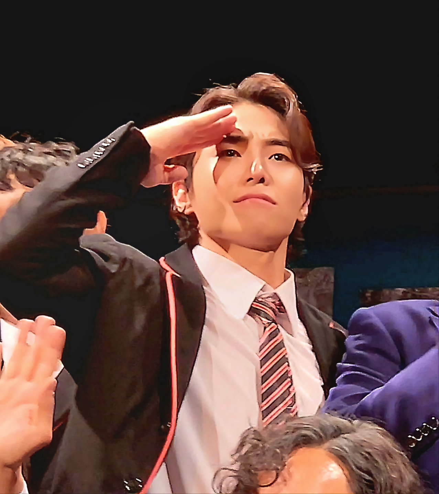

뿐만 아니라 내 본진 외에 다른 배우들 역시 내가 어딜 보는지 너무 적나라하게 느낄 수 있을 것 같아서 코앞에 있는 다른 배우를 외면하고 내 본진만 보기에는 양측 모두에게 어쩐지 민망한 느낌을 줄 수 있을 것 같아서 대부분 98% 정도 본진을 보던 나는 1열 관극시 60% 정도로 떨어뜨려 볼 수밖에 없었다.
가까이에서 볼 수 있는 것은 정말 좋았고 손을 뻗으면 닿을 거리에 있다는 것이 정말 생생하고 큰 충격으로 다가왔다. 다행히 긍석은 미모를 얼마간 회복한 상태였기 때문에 내가 푹 빠져들었던 19데이킨의 모습을 얼마간 구현하고 있어서 더욱 황홀했던 시간이었다.
물론 그는 나이가 들었고 그때와 같을 수 없지만 그가 가지고 있는 특징적인 표정, 분위기가 순간순간 선명하게 보일 때마다 나는 가슴을 부여잡으며 머릿속으로 '내 도리안 그레이는 너구나 정말 아름답다'라고 주접스럽게 외칠 수밖에 없었던 것이다. 상당 기간 걍스의 아름다움에 빠져있던 내가 긍석을 보고 아름다움을 느꼈다는 것은 참으로 고무적인 일이다.
그가 언제까지 그 미모를 유지할지 알 수 없으나 그래도 히보 관극 역사상 한 번이나 있을까 말까한 1열 관극시에 어느 정도 돌아온 미모 상태의 은킨을 볼 수 있었던 것은 돌이켜 생각해봐도 정말 아주 큰 행운이었다.